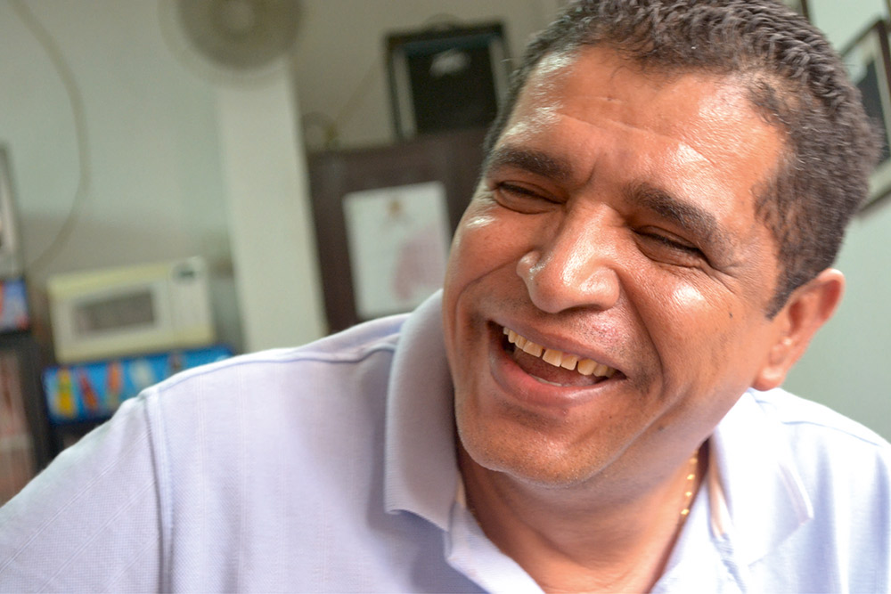
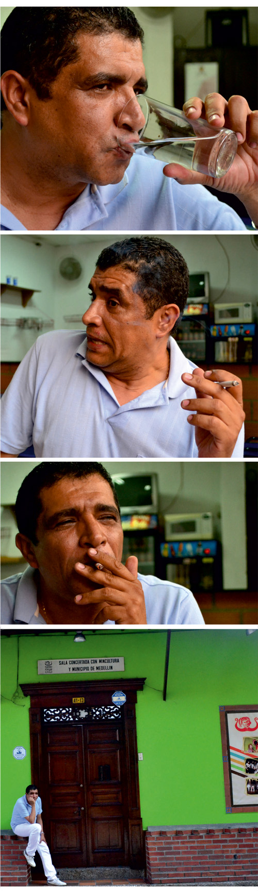

Iván Zapata Ríos
En el teatro estoy a plenitud
Por: Cristóbal Peláez González
Transcripción: Karen J. Crespo
Fotografías: Lila Cebrián

Nada complicado. Sigue transpirando ese aire de barrio, la cordialidad, la gentileza, la solidaridad. Hace teatro con la misma disposición de un hombre formal que va a su trabajo y cumple con su horario, pues está lejos de cualquier ambiente bohemio y, siendo alguien que ha luchado por la agremiación, está ausente del gremio. Una vida en la más rigurosa disciplina: leer, escribir, administrar, poner en escena. Buen hijo, buen padre, buen hermano, buen colega, en todo su hacer es tan aplicado que se constituye en la excepción de esa imagen de paria y sinvergüenza que la sociedad estampa a quien se dedica al oficio de las tablas. Aparte de unos cuantos sucesos escénicos –enterrarse un clavo hasta los huesos en plena representación, prenderse fuego mientras hacía de genio en Aladino, aguantar hambre en Bogotá y sobrevivir a punta de pan con quesito, y algún infortunio familiar–, a este hombre la vida, después de rebuscarla, le ha dado una existencia deseable. Ha perseverado con el Teatro Popular de Medellín en una ejemplar labor artística, administrativa y académica. Una gran porción de la actual generación teatral ha pasado por esas toldas, y eso la distingue en su desempeño ético y artístico. Siguiendo sus huellas, algunos actores y directores han levantado proyectos que hoy hacen de Medellín una ciudad donde se respiran mejores aires teatrales.
El virus
¿Cómo se le va entrando a uno esta cosa extraña, obsesiva, por el teatro?
¡Jum!, pues yo ni sé; tendría que hurgar en mi infancia en el barrio La Rosa, Santa Cruz. Tal vez la influencia de mi papá, que, aunque se desempeñaba como pintor de brocha gorda y trabajaba en la construcción, era bueno con el pincel, buen artista, arrecho para el baile, no perdía diciembre representando sus sainetes. Yo lo acompañaba y recuerdo que eso me entusiasmaba mucho. Ahí puede estar el origen.
Esos sainetes, tan arraigados a nuestra tradición, ¿se hacían a expensas de la parroquia, alguna asociación, o qué?
No, no, era un grupo de amigos, todos ellos tomatrago, parranderos, mujeriegos, que les daba por hacer temas del barrio para ir representando de cuadra en cuadra mientras despedían al año viejo. Yo iba a regañadientes de mi mamá, a quien no le gustaba que estuviera en esas compañías, decía, porque me volvería como ellos; se molestaba mucho al verme pintarrajeado y con esos vestuarios de colorinches. En esas veladas a uno le tocaba estar enredado entre putas y borrachos. Mi viejo era muy tranquilo con eso.
¿Recuerdas alguno de esos sainetes?
No. Eran temas del lugar, de la vida barrial; en alguno de ellos se ridiculizaba al cura y al sacristán y casi nos cuesta la echada del barrio. De todas maneras, esos sainetes eran una forma de parranda, una disculpa para ir tomando trago de casa en casa.
En ese entonces La Rosa era un barrio sano, ¿no?
Sí, lo era. Tengo la imagen de unas tablas untadas de jabón, con las cuales los niños nos deslizábamos felices por esas pendientes.
Digamos que ya te había entrado el virus teatral… ¿Cuándo se hizo evidente?
Empecé teatro teatro en el Liceo Antioqueño, en 1974. Ahí, sin más herramienta que el entusiasmo, me atreví a escribir, dirigir y actuar en mi primera obra. El grupo se llamaba Gila –Grupo Independiente del Liceo Antioqueño– y la obra era El rompehuelgas; ese nombre te lo dice todo: pura pancarta. Estrenamos en el Teatro Camilo Torres, y de ahí salimos a cuanta carpa de huelga hubiera y a cuanto acto político-cultural nos invitaran.
El Liceo Antioqueño, al margen de su estigma beligerante, fue la cantera de muchos grupos de teatro…
Sí, había otros grupos. Recuerdo que nuestra obra era de treinta minutos, pero los foros al final eran como de tres horas.
En Bogotá, en los festivales nacionales de la Corporación Colombiana de Teatro, había gente que no iba a ver la obra pero no se perdía el foro. Enrique Buenaventura solía decir con gracejo que él era de la familia “Forero”.
La discusión política era interminable, había un gran fervor por el tema social, el teatro era secundario.
Este es su banco
¿Qué sigue?
Al terminar bachillerato ingresé a la Universidad de Antioquia a estudiar derecho, pero las obligaciones económicas en la casa eran tan tenaces que me tocó buscar trabajo, y la única parte donde lo encontré fue en el Banco Popular. Esa es la etapa oscura y gris de mi vida. Mi único aliciente era el trabajo sindical, que el banco castigaba encerrándonos un mes en una cava a contar plata; era la jornada laboral, lógico, pero uno no veía a nadie.
Pero no perdías la práctica con el teatro…
Seguía con mi grupo haciendo panfletos. En ese tiempo me encontré con dos personas que no sabía quiénes eran. Uno de ellos fue Rodrigo Saldarriaga, que una vez me saludó muy emocionado, me abrazó y me dijo: “compañero, muy bien”; él hacía parte de las brigadas moiristas. El otro, que tuvo mucha influencia en mí, fue un juglar que quise mucho, Juan Guillermo Rúa, con quien me llegué a tropezar en muchas carpas de huelga.
Estamos hablando de una época de terror, la del Estatuto de Seguridad…
El gobierno de Turbay Ayala. Recuerdo que no podíamos estar nunca solos, siempre teníamos que estar con alguien para cuidar que no nos desaparecieran. Si intentaban desaparecernos teníamos la instrucción de hacer bulla, gritar: “¡Yo soy Iván Zapata, estoy en tal parte, estudio en tal otra!”. Eso era muy tenaz, mi casa la allanaron dos veces buscando material subversivo.
La banca no logró horadar tu corazón…
Había empezado como mensajero y logré terminar mi carrera como economista. Apenas terminé, el banco me ofreció la gerencia de la sucursal de Itagüí. Eso implicaba dejar de estar sindicalizado para convertirme en un directivo del banco, un empleado de confianza y manejo. Dije que sí pero puse como condición que el banco pagara lo que debía a los trabajadores del sindicato. Obviamente el banco dijo que no y me echó.
Afortunadamente…
De esa experiencia bancaria me quedó cierta cuadrícula para lo que es el manejo administrativo, el no ser tan loco en la administración de los recursos financieros. Creo que eso ha sido importante durante los treinta años que llevo en el Teatro Popular de Medellín.
¿Te echan del Banco Popular y te dedicas al teatro?
No, qué va. Cuando me echaron sufrí creyendo que el mundo se me iba a acabar; estaba embalado pagando arriendo, recién casado, con mi compañera en embarazo y esa situación de desempleo tan grande en Medellín. Al otro día mi papá me llevó con él a un trabajo que tenía por allá por Santa Fe de Antioquia –entonces uno se iba por la carretera vieja–, paró en todo el Alto del Boquerón, y me dijo: “mire güevón, mire: ¿está viendo qué tan grande es el mundo? De ahora en adelante usted no le va a volver a trabajar a nadie, no le va a marcar tarjeta a nadie; hágase su propia vida, sus propias cosas”.
¿Y?
Empecé a rebuscarme la vida con todo. Me tiré a la calle a vender cancioneros, almanaques Bristol. Me iba por Pichincha, el Caravana, el Tía, el Ley, Carabobo. Las putas me ayudaban y me cuidaban porque yo era “el estudiao”. Revendí boletas en los cines, en los teatros, en el estadio; vendí aguardiente, cigarrillo, cervezas, y todo cuanto se atravesara, según la época: pólvora, chucherías navideñas, textos escolares. Y, a pesar de todo, seguía con mi grupo de teatro.
No prosperó el Gila
No, se agotó. A unos integrantes se los llevó la vida y a otros se los llevó la muerte. Cuando digo se los llevó la vida fue que optaron por lo más peligroso y sospechoso: la vida normal.

El azar
¿Y cómo diste con el Teatro Popular de Medellín?
Como sucede siempre: una amiga que de pronto un día me dijo: “ve, Iván, me metí a clases de teatro, eso es todo bacano”. La curiosidad me trajo hasta aquí. Fui de las primeras promociones de la Escuela del TPM. Para abreviar te diré que a los dos años ya estaba dirigiendo Ida y vuelta, de Benedetti; después seguí escribiendo obras infantiles: Juan sin miedo, Hansel y Gretel. De ahí fui el director del Tercer Teatro Festival, un evento muy bonito que se inventaron para apoyar a un grupo en busca de sede; todos hacían funciones con ese fin. Logramos recoger casi cinco millones y ese fue el plante para conseguir la sede del TPM, una casa que amenazaba con venirse abajo. Nos pidieron catorce millones, pero ningún banco le prestaba a un grupo de teatro; tocó hipotecar mi casa. No la podíamos ocupar porque estaba hecha ruinas, pero poco a poco fuimos levantando este entable que se ve hoy.
Teatro Popular de Medellín
Reconocido por su trayectoria, el TPM ha cumplido una labor meritoria en el campo académico
Funcionamos en una triada: Juan Carlos Pavón es el director artístico, Juan Carlos Talero es el director académico, y yo me desempeño como director administrativo, pero continúo escribiendo y dirigiendo.
Tis tis tas, ¿en qué mundo estás? es una dramaturgia tuya que se pone en escena en muchas partes
En Cuba, Portugal, España, Uruguay, y en Colombia en cuanta ciudad digas.
También La sirena Irene, obra emblemática
Sí. Esa es una obra de escritura colectiva, que también dirigí.
Una línea de acción infantil muy fuerte
Poco a poco hemos logrado un equilibrio, pero también otra línea fuerte ha sido el teatro juvenil, como es el caso de Ciudad proyecto. En el plano académico te puedo decir que media población teatral ha pasado por aquí: Félix y Ana María de El Trueque, Mario de Fractal, María Eugenia Carvajal, Gilberto Amariles, Vicky Salazar, Cristina Hincapié… Paremos de contar. Creo que la misión del TPM ha sido la de engomar a la gente con el teatro.
¿Te gusta la docencia?
Sí, me encanta, pero por suerte no he caído en la trampa de “enseñar” teatro. Porque el teatro no se enseña, el teatro se aprende. Uno lo que hace con la gente es motivarla a que investigue, a que se apropie de las herramientas de aprendizaje; por eso no hablamos de actuación sino de técnicas de actuación, y no decimos improvisación sino técnicas de improvisación.
Pero tu labor ha ido más allá del TPM
Universidad de Medellín, Politécnico, la Débora Arango. También hice dramatizados en Teleantioquia en sus comienzos y, aunque no lo creas, hice radioteatro; maestros míos fueron Gaspar Ospina –Kalimán–, Antonio Gómez, Selena Gómez –'La Pochochita' de Montecristo– Erika Krum –el niño Solín– y Esther Sarmiento de Correa, la voz ronca que narraba Kalimán.
De niños creíamos que era un viejo tenebroso… Pasaste de rebuscador a radioactor
Simultáneo: una cosa sin abandonar la otra. Claro que lo que yo hacía en la radio eran “bolos”, extras, líneas pequeñas.
¿Y de dónde viene ese nombre de “bolos”?
Ni me lo preguntes porque no lo sé. Posteriormente, en Radiodifusora Nacional, hice radioteatro cultural, la vida de Pablo Neruda; por ahí todavía tengo guiones de radioteatro, adaptaciones, por ejemplo obras de Oscar Wilde, García Lorca… Ah, también libretié y llegué a actuar en capítulos de La ley contra el hampa y, ¿te acordás?, Toñito El Gruñón.
Sí que me acuerdo: la época dorada de la radio, radionovelas desde el amanecer hasta el fin del día, humor con Montecristo, Ebert Castro, Los Chaparrines, La escuelita de doña Rita, Emeterio y Felipe…
Tuve alguna cercanía con Efraín Arce Aragón, que puso a llorar a todo el país con Un ángel de la calle; esa radionovela tuvo versiones en todo, cine, teatro y televisión.
Vivir no solo para el teatro
¿Has llegado ya a un punto de equilibrio? ¿Ya no tenés que vender cancioneros?
No creás. Lo que se dice vivir exclusivamente por, para y del teatro, no he podido en estos treinta años con el TPM. Sigo trabajando en una empresa familiar de pinturas y acabados en yeso. Me muevo entre las dos cosas con cierta libertad: cinco horas en la empresa y ocho o diez en el teatro.
Y a todas estas, ¿qué se te perdió en el teatro?
Esta ha sido una búsqueda constante en la que no he podido acabar de encontrar, y en la que nunca me quiero acabar de encontrar; es decir, yo espero algún día morirme perdido en esa búsqueda del quehacer teatral, en ese fenómeno que todavía me apasiona, que es esa relación con el espectador, ese momento mágico antes de encender las luces, y ese momento casi post orgásmico en el que el público se va y uno queda con la sala vacía. En esa búsqueda estoy desde que vi la primera obra de teatro, La moneda del centavo y medio de Juan Guillermo Rúa; desde la primera obra que leí, La vida es sueño, de Calderón de la Barca.
De tanto leer terminaste escribiendo
Sí. He sido un lector frenético, pero con el tiempo uno aprende a decantar y que antes la calidad que la cantidad. A mis catorce años no era así, y de tanto leer casi me rayo, le metía demasiada información al cerebro: Nietzsche, Marx, Mao; aprendí francés por mi cuenta y me acerqué a Sartre y a Camus; la voracidad me llevó a leer en inglés, en portugués, en italiano. No soy capaz de dormir si no leo antes, y mi disciplina es levantarme todos los días a las cuatro de la madrugada a escribir, un ejercicio que prolongo hasta las siete de la mañana. Si no escribo es como si no me bañara.
No, no, no jodás Iván, no charlés tan pesado, eso de levantarse a las cuatro no es para cristianos
Es que la vida es bien corta para uno pasársela durmiendo.
Y de ese maremágnum de lecturas, ¿cuál es el sedimento? Hablo de autores
Ya escojo muy bien, me volví como las águilas: vuelo muy alto y escojo bien mis presas. A veces quedo muy contento cuando leo una página, pero bien leída. Antes era el desorden, hasta tres libros al tiempo, pasaba impoluto de Cortázar a Kundera y a cualquier otro al tiempo. Alguna vez me encontré sin un libro cerca, y fue tanto mi desespero que me puse a leer el directorio telefónico. El Quijote es un libro que siempre releo; Cortázar, Borges, Shakespeare…
Shakespeare inevitable
A Shakespeare, que tanto leí, lo vine a aprender con David Lee, un guionista de televisión, medio gringo, medio chino, con quien me topé en un encuentro en República Dominicana; él escribe para CSI Miami, CSI New York. Toda la estructura de sus guiones televisivos proviene de Shakespeare. Con ese hombre aprendí mucho.
Leer y escribir
Una lectura que te haya propinado un golpe sensorial…
Estaba allí sentadito en ese muro. Iba a arrancar, recuerdo, un ensayo de Ciudad Proyecto. Ya había citado la gente y mientras esperaba empecé a leerme El maestro de escuela de Fernando González, y hasta ahí llegó el ensayo, no fui capaz; me conmovió de tal forma que me tuve que poner a hacer de urgencia la versión para teatro.
¿Y la pusiste en escena?
Solo una lectura dramática. Se quedó entre un montón de obras que he escrito y nunca he montado, como Doña Pánfaga, la brújula esdrújula, por ejemplo, que fue premio en Bilbao de dramaturgia infantil; nunca la monté, otros lo han hecho.
¿Te gustan o te disgustan las versiones de tus obras hechas por otros grupos?
Que las hagan los que quieran. Me abochorna cuando me llaman a pedirme permiso. Son hijos que uno hace y salen por el mundo a lo que quieran hacer con ellos. Una vez que se escribió, eso ya no es de uno; fue de uno mientras se estaba escribiendo.
¿Quiénes han sido tus referentes en dramaturgia?
He tenido unos maestros muy buenos: Sanchis Sinisterra, Kartun, Azama, Henry Díaz…
¿Y tu mayor influencia?
Pinter y Beckett.
Para los dramaturgos la novela constituye una incitación
Ya voy para el cuarto intento de arrancar una novela a partir de una noticia que leí hace muchos años en El Espectador, sobre una mujer que se enamoró de un muerto y pedía a un cura que la casara con él; un tipo que, además, nunca conoció. El pulso de dramaturgo se me mete y no me deja continuar; me es difícil escribir para que me lean, porque tengo muy metido el escribir para que me vean.
Niño raro
Al verte tan serio, tan aplomado, uno se imagina tu infancia de niño adulto…
Ah, era muy raro, era de los niños raros.
No jugabas, ¿cierto? ¡Eso pa' qué!
Sí, cierto, prefería las bibliotecas, era un encanto leer. En el bachillerato me dedicaba a escribir acrósticos y cartas de amor que me encargaban los compañeros y me hacía mi platica. El vicio de la lectura lo adquirí de un tío que era abogado y tenía una biblioteca muy grande; allá me iba y le sacaba libros a escondidas, hasta que él me pilló y empezó a dármelos.
Y de tus padres heredaste el teatro y el baile
Mi mamá, María Bertilda, una blanca venida de Cisneros, y mi papá, Gilberto, un negro procedente de San Pedro de Los Milagros, se enamoraron bailando tango, a pesar del racismo de la familia de ella; mejor dicho, el negro se la ganó a punta de baile.
No hemos tocado el cine
A mi papá metido en eso de la construcción le tocó también hacer varios cines, entonces me llevaba; en mi primera película casi me enloquezco.
¿Cuál era?
Mexicana, de luchadores, fue en el Teatro Palermo. Recuerdo ese desespero y esas ganas de saber cómo era que eso se podía proyectar ahí; esas imágenes ahí saliendo eran magia.
Teatro para niños
El TPM se ha distinguido por su énfasis en el espectador niño
El TPM se fundó en el 79. Ese era el año internacional del niño y el grupo, por cuestión de proyección, abrió camino por ahí; después se volvió una convicción. El teatro para niños muchas veces se mira como una especie de subgénero dentro del teatro; inclusive el tratamiento que se le da en los festivales es de muestrita, como si ese público no tuviera derecho a invertir su tiempo libre y a encontrarse con la poesía, con la fantasía.
Y campea una frase que es la más mezquina de todas: “Hacer teatro para niños es importante porque ellos constituyen el público del futuro”. ¡Qué asco!
Terrible frase. Es un público del aquí y del ahora, exigente, irreverente, participativo.
¿Y te sentís contento con lo realizado hasta hoy?
Sí. Primero que todo, porque lo hago con mucho afecto; el que trabaja sin amor es un perfecto desocupado. Disfruto lo que hago, me sé la historia de cada ladrillito que está pegado aquí, cómo se hizo, cómo se ha formado. Para nosotros no fue tan fácil. Para la generación actual hay más oportunidades: que salas abiertas, que salas concertadas, que becas. A nosotros nos tocó hacer teatro y al mismo tiempo financiarlo de nuestro propio bolsillo; cuando estábamos en la buena era porque en diciembre escasamente nos daban platica que alcanzaba para unos pasajes.
Se te ve ahora tranquilo, sereno…
No creás, tengo fama de bravo: soy exigente, perfeccionista en los montajes, demasiado recto en mis cosas; en lo administrativo me vuelvo celoso y superestricto, excesivo, así sean 100 o 200 pesos de unas fotocopias. Robarle a un pobre es un pecado imperdonable, pero el que le roba a un pobre grupo de teatro no tiene perdón.
No te enojés, calmate, tomémonos un delicioso tinto tipo TPM.
Es que de verdad me embejuco.
Carácter
¿De un papá tan parrandero como sale un hijo tan sano?
¿Sano yo? No creás.
¿O te embriagás haciendo cuentas?
Más bien leyendo y escribiendo. Me gusta bailar. El día que me quieras es un ajuste de cuentas con mis padres.
Eso, hablemos un poco de El día que me quieras, que creo que es un montaje al que le has puesto todas tus emociones
Gardel es un fenómeno social impresionante. Murió hace 77 años, a ninguno de los espectadores le tocó, y no obstante continúa siendo una devoción; a los jóvenes les gusta Gardel. Una anécdota bien especial: en una de las funciones que hicimos en el TPM un chico de unos veinte años trajo a su novia vendada; quería darle una sorpresa en su cumpleaños, solo le quitó la venda a punto de empezar la función; al terminar ella le dijo al chico: “ahora sí que te quiero más”.
Fue muy importante la invitación a Brasil
Tanto nos entusiasmó que decidimos hacer la obra en portugués. Los actores creyeron que yo estaba loco. Nos conseguimos un asesor y le machacamos fuerte; lo logramos.
Intenso
No, el intenso es el teatro, esa cosa tan efímera, tan diluida. Uno se pega hasta uno o dos años montando una obra para un buen aplauso. ¿Cuánto dura un buen aplauso? ¿Un minuto? En el caso de que lo aplaudan dos minutos uno sale flotando cinco centímetros por encima del suelo.
Ese minuto es lo que se llama el instante preñado
Un momento orgásmico.
Pura vanidad nuestra. Somos unas pobres criaturas que necesitamos ser admitidos en el mundo a través del aplauso. Unos enfermitos
Hay un momento que para mí tiene la fuerza cautivadora del misterio, es un instante valioso, íntimo, y es cuando el público se va y la sala queda vacía.
¿Qué queda ahí? ¿Qué hay ahí?
Una tregua, un estado de relax, de laxitud; no se puede verbalizar, trato más bien de sentirlo, porque esa sensación no existe sino en el teatro.
Te preguntaría por tus mejores momentos…
He presentado teatro en atrios, en escuelas, en parques, en salas grandes y pequeñas, en los lugares menos imaginados, pero puedo fechar el momento culminante de mi vida: la noche del 11 de noviembre de 2011 en Brasil, Río de Janeiro, el Teatro Municipal de Niterói repleto, de pie, ovacionando El día que me quieras hablado en portugués. Después, tomando una caipiriña, pensaba: “me demoré 37 años de mi vida haciendo teatro para llegar a este momento”. Pero también te puedo hablar de momentos amargos, muchos, todos los tenemos; recuerdo, por ejemplo, cómo me golpeó de duro la muerte de Juan Guillermo Rúa.
Pero ante todo has sido un negro contento
Sí, soy feliz, feliz.
¡Escupí esa herejía Iván!
Entrevista tomada de la edición No. 27 del periódico de Medellín en Escena